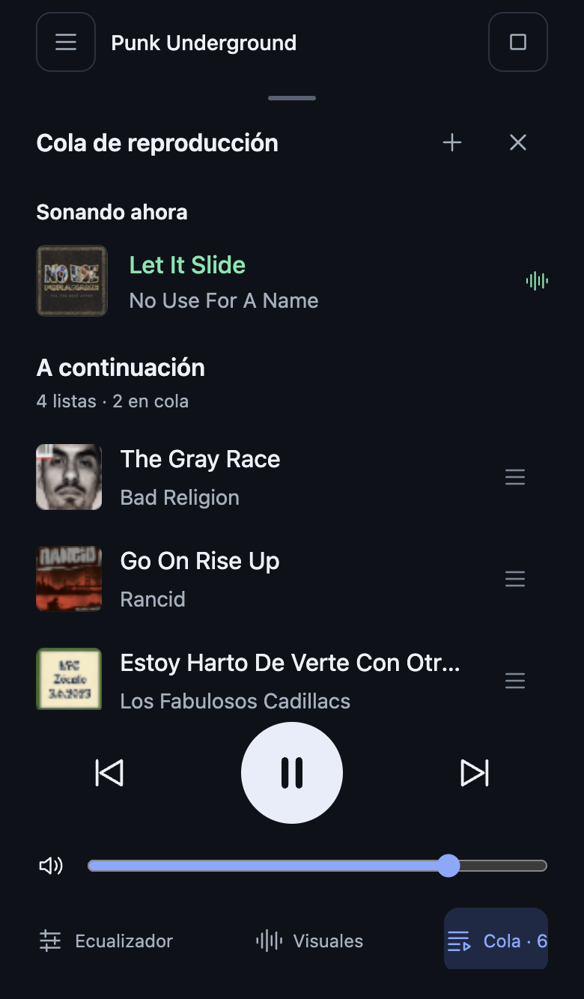

Miniportada, título y artista por canción. Sin tarjetas, numeración ni estados repetidos. El asa permite reordenar en la demo; también con las flechas del teclado.
Revisión 3 · Basada en las referencias de cola que aportaste.

Miniportada, título y artista por canción. Sin tarjetas, numeración ni estados repetidos. El asa permite reordenar en la demo; también con las flechas del teclado.